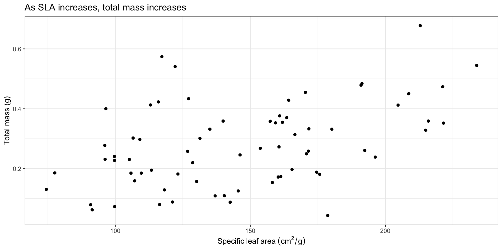

# read in your packages here
library(tidyverse) # general use
library(here) # file organization
library(janitor) # cleaning data frames
library(readxl) # reading excel files
library(scales) # modifying axis labels
library(ggeffects) # getting model predictions
library(MuMIn) # model selection
# read in your data here
drought_exp <- read_xlsx(
# file path
here("data", "Valliere_etal_EcoApps_Data.xlsx"),
# specify which sheet I want to read in
sheet = "First Harvest"
)Workshop 8 TEMPLATE
this is for the recording
Data source: Valliere, Justin; Zhang, Jacqueline; Sharifi, M.; Rundel, Philip (2019). Data from: Can we condition native plants to increase drought tolerance and improve restoration success? [Dataset]. Dryad. https://doi.org/10.5061/dryad.v0861f7
In this workshop, we will answer the question: How do specific leaf area, water treatment, and species influence plant mass?
Specific leaf area is a continuous variable measured in cm2/g.
Water treatment is a categorical variable (i.e. a factor) with 2 levels: drought stressed (DS) and well watered (WW).
Species is a categorical variable (again, a factor) with 6 levels.
| Species name | Species code | Common name |
|---|---|---|
| Encelia californica | ENCCAL | Bush sunflower |
| Eschsholzia californica | ESCCAL | California poppy |
| Penstemon centranthifolius | PENCEN | Scarlet bugler |
| Grindelia camporums | GRINCAM | Gumweed |
| Salvia leucophylla | SALLEU | Purple sage |
| Stipa pulchra | STIPUL | Purple needlegrass |
| Lotus scoparius | LOTSCO | Deerweed |
1. Set up
Storing some colors to use in visualizations, and setting a common ggplot theme for all plots:
# storing colors to use for species
lotsco_col <- "#E69512"
pencen_col <- "#D6264F"
salleu_col <- "#6D397D"
enccal_col <- "#3A5565"
stipul_col <- "#3F564F"
esccal_col <- "#515481"
gricam_col <- "#6C91BD"
# storing colors to use for water treatments
ds_col <- "#A62F03"
ww_col <- "#045CB4"
# storing a ggplot theme (that will be used for all ggplots)
theme_set(theme_bw())2. Clean data
# cleaning data here
drought_exp_clean <- drought_exp |> # starting from drought_exp data frame
# cleaning up column names
clean_names() |>
# making a column of full species names from the column `species`
mutate(species_name = case_match(
species,
"ENCCAL" ~ "Encelia californica", # bush sunflower
"ESCCAL" ~ "Eschscholzia californica", # California poppy
"PENCEN" ~ "Penstemon centranthifolius", # Scarlet bugler
"GRICAM" ~ "Grindelia camporum", # Gumweed
"SALLEU" ~ "Salvia leucophylla", # purple sage
"STIPUL" ~ "Stipa pulchra", # purple needlegrass
"LOTSCO" ~ "Lotus scoparius" # deerweed
)) |>
# making a column of full treatment names from the column `water`
mutate(water_treatment = case_match(
water,
"WW" ~ "Well watered",
"DS" ~ "Drought stressed"
)) |>
# making sure that species_name is a factor and ordering the levels
mutate(species_name = as_factor(species_name),
species_name = fct_relevel(species_name,
"Lotus scoparius",
"Penstemon centranthifolius",
"Salvia leucophylla",
"Encelia californica",
"Stipa pulchra",
"Eschscholzia californica",
"Grindelia camporum")) |>
# making sure that water_treatment is a factor and ordering the levels
mutate(water_treatment = as_factor(water_treatment),
water_treatment = fct_relevel(water_treatment,
"Drought stressed",
"Well watered")) |>
# selecting columns of interest
select(species_name, water_treatment, sla, total_g)Double checking that everything worked by checking the structure:
str(drought_exp_clean)tibble [70 × 4] (S3: tbl_df/tbl/data.frame)
$ species_name : Factor w/ 7 levels "Lotus scoparius",..: 4 4 4 4 4 4 4 4 4 4 ...
$ water_treatment: Factor w/ 2 levels "Drought stressed",..: 2 2 2 2 2 1 1 1 1 1 ...
$ sla : num [1:70] 170 215 209 216 222 ...
$ total_g : num [1:70] 0.455 0.329 0.45 0.359 0.352 ...And displaying some rows from the data frame:
slice_sample(
drought_exp_clean, # data frame to display
n = 10 # number of rows to display
)# A tibble: 10 × 4
species_name water_treatment sla total_g
<fct> <fct> <dbl> <dbl>
1 Salvia leucophylla Drought stressed 110. 0.185
2 Salvia leucophylla Well watered 127. 0.258
3 Lotus scoparius Well watered 137. 0.109
4 Grindelia camporum Well watered 191. 0.479
5 Salvia leucophylla Drought stressed 99.7 0.227
6 Salvia leucophylla Well watered 96.2 0.232
7 Stipa pulchra Drought stressed 131. 0.301
8 Eschscholzia californica Well watered 122. 0.541
9 Eschscholzia californica Well watered 116. 0.423
10 Penstemon centranthifolius Well watered 160. 0.1723. Visualizing data
What is the relationship between SLA and total mass?
# base layer: ggplot
ggplot(data = drought_exp_clean,
aes(x = sla,
y = total_g)) +
# scatter plot
geom_point() +
# relabeling axes and adding a title
labs(x = expression(Specific~leaf~area~(cm^2/g)),
y = "Total mass (g)",
title = "As specific leaf area increases, total plant mass increases")
What are the differences in total mass between water treatments?
# base layer: ggplot
ggplot(data = drought_exp_clean,
aes(x = water_treatment,
y = total_g,
color = water_treatment)) +
# first layer: jitter
geom_jitter(width = 0.1,
height = 0,
shape = 21,
alpha = 0.6) +
# adding a summary to calculate mean mass in each water treatment
stat_summary(geom = "point",
fun = mean,
size = 4) +
# manually setting colors
scale_color_manual(values = c("Well watered" = ww_col,
"Drought stressed" = ds_col)) +
# changing axis labels and title
labs(x = "Water treatment",
y = "Total mass (g)",
title = "Plant mass is higher on average in well watered treatment than drought stressed treatment") +
# taking out legend
theme(legend.position = "none")What are the differences in total mass between species?
# base layer: ggplot
ggplot(data = drought_exp_clean,
aes(x = species_name,
y = total_g,
color = species_name)) +
# first layer: jitter
geom_jitter(width = 0.1,
height = 0,
shape = 21,
alpha = 0.6) +
# summary to calculate mean mass for each species
stat_summary(geom = "point",
fun = mean,
size = 4) +
# making sure that axis labels wrap nicely
scale_x_discrete(labels = label_wrap(10)) +
# setting colors manually
scale_color_manual(values = c(
"Lotus scoparius" = lotsco_col,
"Penstemon centranthifolius" = pencen_col,
"Salvia leucophylla" = salleu_col,
"Encelia californica" = enccal_col,
"Stipa pulchra" = stipul_col,
"Eschscholzia californica" = esccal_col,
"Grindelia camporum" = gricam_col
)) +
# labelling axes and title
labs(x = "Species",
y = "Total mass (g)",
title = "Species differ in average mass") +
# getting rid of legend
theme(legend.position = "none")4. Fitting models
8 models total:
| Model number | SLA | Water treatment | Species | Predictor list |
|---|---|---|---|---|
| 0 | no predictors (null model) | |||
| 1 | X | X | X | all predictors (full model) |
| 2 | X | X | SLA and water treatment | |
| 3 | X | X | SLA and species | |
| 4 | X | X | water treatment and species | |
| 5 | X | SLA | ||
| 6 | X | water treatment | ||
| 7 | X | species |
Model fitting
# model 0: null model
model0 <- lm(
total_g ~ 1, # formula
data = drought_exp_clean # data frame
)
# model 1: all predictors
model1 <- lm(
total_g ~ sla + water_treatment + species_name, # formula
data = drought_exp_clean # data frame
)
# model 2: SLA and water treatment
model2 <- lm(
total_g ~ sla + water_treatment, # formula
data = drought_exp_clean # data frame
)
# model 3: SLA and species
model3 <- lm(
total_g ~ sla + species_name, # formula
data = drought_exp_clean # data frame
)
# model 4: water treatment and species
model4 <- lm(
total_g ~ water_treatment + species_name, # formula
data = drought_exp_clean # data frame
)
# model 5: SLA
model5 <- lm(
total_g ~ sla, # formula
data = drought_exp_clean # data frame
)
# model 6: water treatment
model6 <- lm(
total_g ~ water_treatment, # formula
data = drought_exp_clean # data frame
)
# model 7: species
model7 <- lm(
total_g ~ species_name, # formula
data = drought_exp_clean # data frame
)Model diagnostics
par(mfrow = c(2, 2)) # creates a 2x2 grid to display diagnostic plots
plot(model1)
plot(model2)
plot(model3)
plot(model4) # diagnostics for model 4 look okplot(model5)plot(model6)plot(model7)Model selection
AICc(
model1, # saturated
model2,
model3,
model4, # model 4 seems to be the best model
model5,
model6,
model7,
model0 # null
) |>
# arranging output in increasing order of AIC
arrange(AICc) df AICc
model4 9 -156.19595
model1 10 -153.75361
model3 9 -124.07569
model7 8 -120.30191
model2 4 -95.82521
model5 3 -88.85180
model6 3 -86.76661
model0 2 -74.98036Look at the model summary:
summary(model4)
Call:
lm(formula = total_g ~ water_treatment + species_name, data = drought_exp_clean)
Residuals:
Min 1Q Median 3Q Max
-0.157087 -0.046953 -0.003733 0.041244 0.192657
Coefficients:
Estimate Std. Error t value Pr(>|t|)
(Intercept) 0.05455 0.02451 2.225 0.02973 *
water_treatmentWell watered 0.11695 0.01733 6.746 5.90e-09 ***
species_namePenstemon centranthifolius 0.05003 0.03243 1.543 0.12799
species_nameSalvia leucophylla 0.12020 0.03243 3.706 0.00045 ***
species_nameEncelia californica 0.21774 0.03243 6.714 6.70e-09 ***
species_nameStipa pulchra 0.22881 0.03243 7.055 1.72e-09 ***
species_nameEschscholzia californica 0.23164 0.03243 7.143 1.22e-09 ***
species_nameGrindelia camporum 0.31335 0.03243 9.662 5.53e-14 ***
---
Signif. codes: 0 '***' 0.001 '**' 0.01 '*' 0.05 '.' 0.1 ' ' 1
Residual standard error: 0.07252 on 62 degrees of freedom
Multiple R-squared: 0.7535, Adjusted R-squared: 0.7257
F-statistic: 27.08 on 7 and 62 DF, p-value: < 2.2e-16# reference for water_treatment: Drought stressed
# reference for species: Lotus scopariusStop and think: what does this model mean?
What is the best model?
The best model that predicts total plant mass (g) includes water treatment and species (F(7, 62) = 27.08, p < 0.001, \(\alpha\) = 0.05), but not SLA.
How much variation in the response (total mass, in grams) does this model explain?
This model explained 73% (adjusted R2) of the variation in total mass.
How do we interpret the effects of the predictors on the response variable (again, total mass in grams)?
On average, plant masses in drought stressed conditions were 0.12 \(\pm\) 0.02 g less than plant masses in well watered conditions across species.
Across water treatments, all species have different and higher masses than Lotus scoparius except Penstemon centranthifolius.
5. Model predictions
model4_predictions <- ggpredict(
model4, # model
terms = c("species_name", "water_treatment") # predictors
) |>
# renaming the columns
rename(species_name = x,
water_treatment = group)Before plotting, LOOK AT THE PREDICTION DATA FRAME using View(model4_predictions) or by clicking on the object in the Environment.
6. Final figure
# base layer: ggplot
# using the drought_exp_clean object
ggplot(data = drought_exp_clean,
aes(x = water_treatment,
y = total_g,
color = water_treatment)) +
# first layer: jitter showing individual observations
geom_jitter(width = 0.1,
height = 0,
shape = 21,
alpha = 0.6) +
# second layer: point range showing model predictions
# note that this is appropriate because there are only categorical predictors
# in the final model
geom_pointrange(data = model4_predictions,
aes(y = predicted,
ymin = conf.low,
ymax = conf.high)) +
# manually setting colors
scale_color_manual(values = c("Well watered" = ww_col,
"Drought stressed" = ds_col)) +
# wrapping x-axis labels
scale_x_discrete(labels = label_wrap(10)) +
# creating different panels for each species
facet_wrap(~species_name, nrow = 1) +
# labelling x- and y-axis
labs(x = "Water treatment",
y = "Total mass (g)") +
# taking out the legend
theme(legend.position = "none")